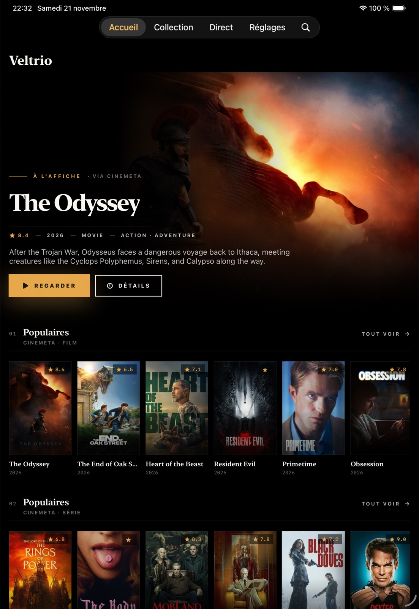

Addons Stremio & Import 1-clic
Connectez votre compte Stremio dès le premier lancement pour importer instantanément tous vos addons, votre bibliothèque et votre historique de lecture — synchronisé automatiquement à chaque ouverture.
Addons Stremio, débrideurs 4K, serveurs Plex / Jellyfin / Emby et IPTV avec guide TV — réunis dans un seul lecteur natif ultra-rapide sur 6 plateformes.

Une interface de salon noire et ambre pensée pour le grand écran : films à l’affiche, catalogues et reprise immédiate.
Fini de jongler entre quatre applications. Veltrio rassemble vos addons, vos débrideurs, vos serveurs personnels et vos chaînes en direct dans une expérience native fluide.
Connectez votre compte Stremio dès le premier lancement pour importer instantanément tous vos addons, votre bibliothèque et votre historique de lecture — synchronisé automatiquement à chaque ouverture.
Liez Real-Debrid, AllDebrid, TorBox ou Premiumize par simple code PIN (sans copier de clé) pour lancer vos flux 4K HDR mis en cache instantanément.
Vos films et séries hébergés chez vous apparaissent automatiquement sur les fiches Veltrio, avec reprise de lecture exacte et synchronisation Trakt / SIMKL.
Importez vos playlists M3U ou comptes Xtream Codes : programme en cours et suivant, grille TV complète, zapping instantané depuis le lecteur et catch-up replay.
Propulsé par libmpv avec accélération matérielle, audio multicanal, mémorisation de vos langues audio/sous-titres, AirPlay, Chromecast, Picture-in-Picture et téléchargement hors-ligne.
Plus jamais d’URL ou de mot de passe à taper à la télécommande : ouvrez Veltrio sur votre Apple TV ou Android TV, saisissez le code à 6 chiffres depuis votre iPhone ou Mac, et tous vos addons, comptes, playlists IPTV et votre Collection sont transférés en chiffré sur le réseau local.
Mises à jour intégrées sur macOS, Windows, Android et Android TV avec confirmation avant téléchargement. 100 % open source, sans tracking et sans compte Veltrio obligatoire.
Sur Apple TV, Android TV, Google TV ou Nvidia Shield, chaque geste est pensé pour le canapé.

Prenez directement la main sur la barre de progression avec la télécommande : sauts progressifs fluides, passage à l’épisode suivant et contrôles en verre fumé discrets.
Changez de piste audio, activez vos sous-titres ou choisissez un autre flux sans jamais quitter le film.
Dès l’écran de bienvenue sur la TV, un seul clic suffit pour recevoir toute votre configuration en quelques secondes.
Une interface native soignée sur chaque appareil : navigation Liquid Glass sur iOS 27, grand format éditorial sur iPad et macOS, fluide sur Android et Windows.
Votre rangée « Reprendre » se synchronise avec Stremio, Trakt et vos serveurs personnels pour retrouver chaque film et épisode à la seconde près.
Téléchargez vos films et épisodes avant un vol ou un trajet en train, directement dans l’application.
Un seul champ cherche simultanément dans tous vos addons, vos chaînes IPTV et vos médiathèques locales.

100 % gratuit, sans publicité et open source. Téléchargez la dernière version officielle directement depuis GitHub.
Pour Mac Apple Silicon et Intel (macOS 14+). Mises à jour automatiques Sparkle incluses.
Pour Windows 10 et 11 (64-bit). Installeur léger sans droits admin avec mises à jour automatiques.
Pour smartphones et tablettes Android (Android 8+). APK signé avec mises à jour intégrées.
Pour téléviseurs et box Android TV, Google TV, Nvidia Shield et Freebox. Appairage rapide inclus.
Application native SwiftUI pour iOS 17+ et iPadOS. Disponible en open source, TestFlight en préparation.
Application native tvOS 18+ pour Apple TV HD et 4K. Disponible en open source, TestFlight en préparation.